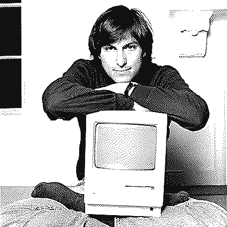
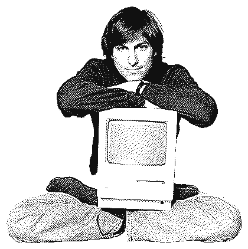
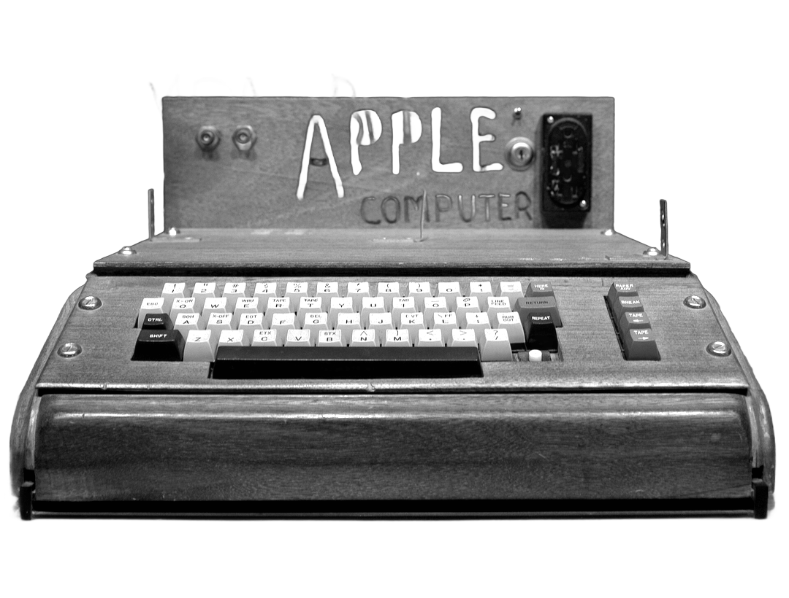
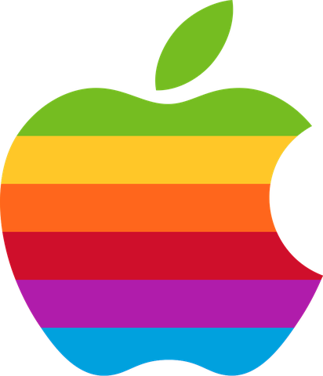
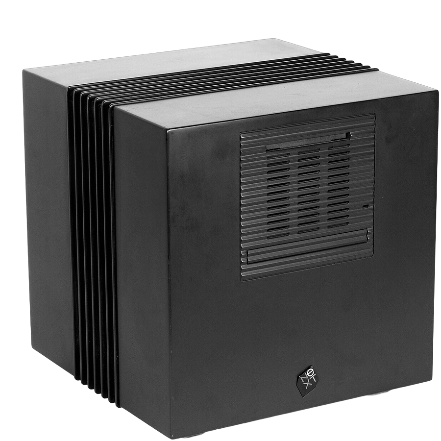
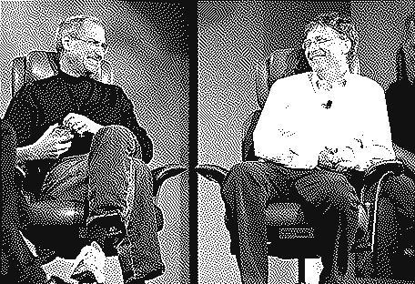

<!doctype html>
<html lang="cs"><head><meta charset="utf-8">
<!-- POSTAVILI TO #01 – Steve Jobs. TikTok/Reels 540×960 CSS px (render 2×), 30 fps, délka podle hlasu (timeline.js).
     Verze 2 „retro Mac“: duhové pruhy jako motiv (pruhové přechody, pruhované nadpisy, výplně), 1bit okna, dialogy a kurzor
     ve stylu počítačů z 80. let, fotky v Atkinsonově ditheringu (photos/retro.py), pixelové a VHS přechody, nový podnět
     zhruba každou sekundu. Časy vět a titulků generuje voice/timeline.py (timeline.js), scény začínají 0,06 s před větou.
     Důležitý text ve sloupci x 74–466, y 130–740. Zvukové události exportuje window.EV (export_ev.py -> fx.json pro sfx.py).
     Fakta a zdroje: README.md. Logo Applu (1977–1998) a fotka Jobse z roku 1984 jsou obrázky od Petra. UI písmo: Jersey 10 (OFL), terminál: VT323 (OFL). -->
<style>
@font-face{font-family:IT;src:url(../../engine/fonts/InterTight-Variable.ttf);font-weight:100 900}
@font-face{font-family:JB;src:url(../../engine/fonts/jetbrains-mono-latin-ext-500-normal.woff2);unicode-range:U+0100-024F}
@font-face{font-family:JB;src:url(../../engine/fonts/jetbrains-mono-latin-500-normal.woff2);unicode-range:U+0000-00FF}
@font-face{font-family:IS;src:url(../../engine/fonts/instrument-serif-latin-ext-400-normal.woff2);unicode-range:U+0100-024F}
@font-face{font-family:IS;src:url(../../engine/fonts/instrument-serif-latin-400-normal.woff2);unicode-range:U+0000-00FF,U+2013-201E,U+2026}
@font-face{font-family:IS;font-style:italic;src:url(../../engine/fonts/instrument-serif-latin-ext-400-italic.woff2);unicode-range:U+0100-024F}
@font-face{font-family:IS;font-style:italic;src:url(../../engine/fonts/instrument-serif-latin-400-italic.woff2);unicode-range:U+0000-00FF,U+2013-201E,U+2026}
@font-face{font-family:AN;src:url(../../engine/fonts/anton-latin-ext-400-normal.woff2);unicode-range:U+0100-024F}
@font-face{font-family:AN;src:url(../../engine/fonts/anton-latin-400-normal.woff2);unicode-range:U+0000-00FF,U+2013-201E}
@font-face{font-family:PX;font-weight:400 700;size-adjust:122%;src:url(../../engine/fonts/jersey-10-latin-ext-400-normal.woff2);unicode-range:U+0100-024F}
@font-face{font-family:PX;font-weight:400 700;size-adjust:122%;src:url(../../engine/fonts/jersey-10-latin-400-normal.woff2);unicode-range:U+0000-00FF,U+2013-201E,U+2026}
@font-face{font-family:VT;src:url(../../engine/fonts/vt323-latin-ext-400-normal.woff2);unicode-range:U+0100-024F}
@font-face{font-family:VT;src:url(../../engine/fonts/vt323-latin-400-normal.woff2);unicode-range:U+0000-00FF,U+2013-201E,U+2026}
:root{--ink:#111;--cream:#EAE3D1;--y:#FFD400}
*{margin:0;padding:0;box-sizing:border-box}
html,body{width:540px;height:960px;overflow:hidden;background:#000}
body{font-family:IT,'Noto Color Emoji',sans-serif;-webkit-font-smoothing:antialiased;position:relative;color:var(--ink)}
.abs{position:absolute}
#stage{position:absolute;left:0;top:0;width:540px;height:960px}
.sc{position:absolute;inset:0;overflow:hidden;display:none}
.cam{position:absolute;inset:0;transform-origin:50% 45%}
.desk{background:var(--cream)}
.desk::before{content:'';position:absolute;inset:0;background:radial-gradient(circle at 1px 1px,rgba(17,17,17,.13) .9px,transparent 1.2px) 0 0/6px 6px}
.paper{background:#F2EDE0}
.black{background:#000;color:#fff}
.ink{background:#111;color:#fff}
.navy{background:#0B0E1E;color:#fff}
.vhs{background:#120808;color:#fff}
.bondi{background:#1E9FB6;color:#fff}
.white{background:#F7F7F4}
.px{image-rendering:pixelated;display:block}
.an{font-family:AN;font-weight:400;letter-spacing:-.005em;line-height:.9;white-space:nowrap}
.is{font-family:IS;font-weight:400;letter-spacing:-.01em;line-height:.95}
.it{font-style:italic}
.vt{font-family:VT,'DejaVu Sans Mono',monospace;letter-spacing:.02em;line-height:1;white-space:nowrap}
.pxf{font-family:PX,monospace;line-height:1.1;white-space:nowrap}
.b7{font-weight:700}
.credit{font-family:JB;font-size:8.5px;letter-spacing:.06em;text-transform:uppercase;white-space:nowrap;opacity:.6}
.cw{position:absolute;background:#fff;color:#111;opacity:1;padding:2px 5px 1px}
.badge{display:inline-flex;align-items:center;gap:10px;background:var(--y);color:var(--ink);font-family:AN;font-size:22px;padding:6px 12px 5px;letter-spacing:.03em;border:2px solid #111;box-shadow:3px 3px 0 #111}
.badge b{font-family:JB;font-size:12px;font-weight:500;letter-spacing:.1em}
/* duhové pruhy (barvy z loga 1977) */
.rbt{font-family:AN;font-weight:400;line-height:1;white-space:nowrap;color:transparent;-webkit-text-stroke:4px #111;
  background:linear-gradient(180deg,#75BD21 0 30%,#FFC728 30% 42%,#FF661C 42% 54%,#CF0F2B 54% 66%,#B01CAB 66% 78%,#00A1DE 78% 100%);-webkit-background-clip:text;background-clip:text;filter:drop-shadow(5px 5px 0 #111)}
.rbs{color:transparent;padding:0 .12em;background:linear-gradient(180deg,#75BD21 0 32%,#FFC728 32% 44%,#FF661C 44% 56%,#CF0F2B 56% 68%,#B01CAB 68% 80%,#00A1DE 80% 100%);-webkit-background-clip:text;background-clip:text}
/* 1bit okna, dialogy, tlačítka, menu */
.win{position:absolute;background:#fff;border:2px solid #111;box-shadow:5px 5px 0 #111;color:#111}
.wt{position:relative;height:26px;border-bottom:2px solid #111;background:#fff}
.wt::before{content:'';position:absolute;left:4px;right:4px;top:5px;height:14px;background:repeating-linear-gradient(180deg,#111 0 2px,transparent 2px 4px)}
.wt span{position:absolute;left:50%;top:50%;transform:translate(-50%,-50%);background:#fff;padding:2px 10px 0;font-family:PX;font-weight:700;font-size:16px;line-height:1;white-space:nowrap}
.wt i.wc{position:absolute;left:14px;top:3px;width:18px;height:18px;border:2px solid #111;background:#fff;box-shadow:0 0 0 3px #fff}
.wb{position:relative;overflow:hidden}
.dlg{position:absolute;background:#fff;border:2px solid #111;box-shadow:5px 5px 0 #111;padding:4px;color:#111}
.dlg>.in{position:relative;border:2px solid #111;width:100%;height:100%}
.btn{position:absolute;display:flex;align-items:center;justify-content:center;height:36px;border:2px solid #111;border-radius:12px;background:#fff;font-family:PX;font-weight:700;font-size:19px;color:#111;padding-top:2px}
.btn.def{box-shadow:0 0 0 3px #fff,0 0 0 6px #111}
.btn.on{background:#111;color:#fff}
.cur{position:absolute;left:0;top:0;z-index:60;transform-origin:2px 2px;filter:drop-shadow(2px 3px 0 rgba(0,0,0,.3));opacity:0}
.tg{display:inline-block;background:#fff;border:2px solid #111;box-shadow:3px 3px 0 #111;padding:5px 10px 3px;font-family:PX;font-weight:700;font-size:19px;color:#111;white-space:nowrap}
.pbar{position:absolute;border:2px solid #111;background:#fff}
.pbar i{position:absolute;left:2px;top:2px;bottom:2px;background:linear-gradient(180deg,#75BD21 0 16.7%,#FFC728 16.7% 33.3%,#FF661C 33.3% 50%,#CF0F2B 50% 66.7%,#B01CAB 66.7% 83.3%,#00A1DE 83.3% 100%)}
.mb{position:absolute;left:0;right:0;top:0;height:28px;background:#fff;border-bottom:2px solid #111}
.mbi{position:absolute;top:0;height:26px;display:flex;align-items:center;padding:2px 9px 0;font-family:PX;font-weight:700;font-size:17px;color:#111}
.mbi.hl{background:#111;color:#fff}
.rbsq{position:absolute;left:14px;top:5px;width:16px;height:16px;border:1.5px solid #111;background:linear-gradient(180deg,#75BD21 0 16.7%,#FFC728 16.7% 33.3%,#FF661C 33.3% 50%,#CF0F2B 50% 66.7%,#B01CAB 66.7% 83.3%,#00A1DE 83.3% 100%)}
.menu{position:absolute;background:#fff;border:2px solid #111;box-shadow:4px 4px 0 #111;opacity:0}
.mi{height:32px;display:flex;align-items:center;padding:2px 16px 0;font-size:21px;white-space:nowrap;color:#111}
.mi.hl{background:#111;color:#fff}
.scr{border-radius:16px;overflow:hidden;box-shadow:0 0 0 10px #1a1a1a,0 0 0 12px #3a3a3a,0 24px 50px rgba(0,0,0,.6);background:repeating-conic-gradient(#e4e4e4 0 25%,#bcbcbc 0 50%) 0 0/4px 4px}
.scr::after{content:'';position:absolute;inset:0;background:repeating-linear-gradient(0deg,rgba(0,0,0,.05) 0 1px,transparent 1px 3px);pointer-events:none}
.scan{position:absolute;inset:0;background:repeating-linear-gradient(0deg,rgba(255,255,255,.05) 0 1px,transparent 1px 3px);pointer-events:none}
.slat{position:absolute;left:0;width:336px;border-bottom:3px solid rgba(0,0,0,.28);box-shadow:inset 0 3px 0 rgba(255,255,255,.25)}
.m10b{display:inline-block;width:20px;height:24px;border:2px solid #111;background:#fff}
.m10b.on{background:#111}
.ptile{width:118px;height:66px;border:2px solid #111;box-shadow:4px 4px 0 #111;display:flex;flex-direction:column;align-items:center;justify-content:center;font-family:PX;font-weight:700;font-size:23px;color:#fff;line-height:1.05}
.ptile b{font-family:VT;font-weight:400;font-size:21px}
.row{position:absolute;left:18px;width:408px;height:92px}
.rk{position:absolute;left:0;top:2px;font-family:PX;font-weight:700;font-size:42px;line-height:1}
.rn{position:absolute;left:42px;top:4px;font-family:PX;font-weight:700;font-size:22px;line-height:1.1}
.rbar{position:absolute;left:42px;top:36px;width:250px;height:36px;border:2px solid #111;background:#fff}
.rf{position:absolute;left:0;top:0;bottom:0;width:0}
.rv{position:absolute;left:302px;top:40px;font-family:VT;font-size:27px;line-height:1;white-space:nowrap}
.stp{display:inline-block;font-family:PX;font-weight:700;font-size:28px;color:#fff;background:#CF0F2B;border:3px solid #111;box-shadow:4px 4px 0 #111;padding:6px 14px 3px;white-space:nowrap}
.caret{display:inline-block;width:.42em;height:.8em;background:currentColor;vertical-align:-.06em;margin-left:2px}
.hl2{background:linear-gradient(#FFC728,#FFC728) 0 88%/0% 42% no-repeat}
.mk{background:linear-gradient(#FF661C,#FF661C) 0 88%/0% 40% no-repeat}
.rad{position:absolute;left:18px;width:372px;height:46px;display:flex;align-items:center;gap:14px;padding:3px 12px 0;border-radius:8px;font-family:PX;font-weight:700;font-size:26px;color:#111}
.rad i{width:26px;height:26px;border:2.5px solid #111;border-radius:50%;background:#fff;position:relative;flex:none}
.rad.on i::after{content:'';position:absolute;left:5px;top:5px;width:11px;height:11px;border-radius:50%;background:#111}
.fld{position:absolute;left:20px;top:18px;width:396px;height:50px;border:2px solid #111;display:flex;align-items:center;padding:0 12px;font-family:IT,'Noto Color Emoji';font-weight:600;font-size:22px;color:#111;white-space:nowrap}
/* titulky */
#cap{position:absolute;left:40px;right:40px;text-align:center;pointer-events:none}
#cap span{display:inline;background:rgba(14,14,14,.88);color:#fff;font-weight:850;font-size:30px;letter-spacing:-.02em;line-height:1.5;padding:4px 12px;box-decoration-break:clone;-webkit-box-decoration-break:clone;border-radius:4px}
#cap b{font-weight:850;background:var(--hb,#CF0F2B);color:var(--hf,#fff);padding:0 6px;border-radius:3px}
/* časová osa 1955–2011 */
#tl{position:absolute;left:74px;width:392px;top:124px;height:36px;pointer-events:none}
#tl .bar{position:absolute;left:0;right:0;top:22px;height:12px;border:2px solid currentColor}
#tl .fill{position:absolute;left:0;top:0;bottom:0;background:linear-gradient(180deg,#75BD21 0 16.7%,#FFC728 16.7% 33.3%,#FF661C 33.3% 50%,#CF0F2B 50% 66.7%,#B01CAB 66.7% 83.3%,#00A1DE 83.3% 100%)}
#tl .tk{position:absolute;top:-7px;width:2px;height:5px;background:currentColor}
#tl .yr{position:absolute;top:0;transform:translateX(-50%);font-family:VT;font-size:20px;line-height:1;padding:2px 6px 0;white-space:nowrap}
#zr{position:absolute;left:0;top:0;pointer-events:none}
#wipe{position:absolute;inset:0;display:none;pointer-events:none}
#wipe i{position:absolute;left:0;width:540px;height:160px}
#dis,#stat{position:absolute;left:0;top:0;width:540px;height:960px;image-rendering:pixelated;pointer-events:none}
#grain{position:absolute;left:0;top:0;width:540px;height:960px;pointer-events:none}
#vig{position:absolute;inset:0;background:radial-gradient(120% 85% at 50% 45%,transparent 58%,rgba(0,0,0,.3) 100%);pointer-events:none}
#flash{position:absolute;inset:0;background:#fffaf0;opacity:0;pointer-events:none}
</style></head><body>
<div id="stage"></div>
<svg id="zr" width="540" height="960"></svg>
<div id="tl"></div>
<div id="cap"></div>
<div id="wipe"></div>
<canvas id="dis" width="18" height="32"></canvas>
<canvas id="stat" width="135" height="240"></canvas>
<canvas id="grain" width="180" height="320"></canvas>
<div id="vig"></div><div id="flash"></div>
<script src="timeline.js"></script>
<script>
const FPS=30;const clamp=(x,a=0,b=1)=>Math.max(a,Math.min(b,x));
const eo=x=>1-Math.pow(1-clamp(x),3),e5=x=>1-Math.pow(1-clamp(x),5);
const eio=x=>{x=clamp(x);return x<.5?4*x*x*x:1-Math.pow(-2*x+2,3)/2};
const back=x=>{x=clamp(x);const c=1.9;return 1+(c+1)*Math.pow(x-1,3)+c*Math.pow(x-1,2)};
const bounce=x=>{x=clamp(x);const n=7.5625,d=2.75;if(x<1/d)return n*x*x;if(x<2/d)return n*(x-=1.5/d)*x+.75;if(x<2.5/d)return n*(x-=2.25/d)*x+.9375;return n*(x-=2.625/d)*x+.984375};
const lerp=(a,b,p)=>a+(b-a)*p;const $=id=>document.getElementById(id);
function rng(seed){let a=seed>>>0;return()=>{a|=0;a=a+0x6D2B79F5|0;let t=Math.imul(a^a>>>15,1|a);t=t+Math.imul(t^t>>>7,61|t)^t;return((t^t>>>14)>>>0)/4294967296}}
const fmt=n=>Math.round(n).toString().replace(/\B(?=(\d{3})+(?!\d))/g,' ');
const f1=v=>v.toFixed(1).replace('.',',');
function uzel(h,col){const w=h*3.8,sw=h*.12,r=h/2-sw/2;return `<svg width="${w}" height="${h}" viewBox="0 0 ${w} ${h}" style="overflow:visible;display:block"><circle cx="${h/2}" cy="${h/2}" r="${r}" fill="none" stroke="${col}" stroke-width="${sw}"/><line x1="${h}" y1="${h/2}" x2="${w-h}" y2="${h/2}" stroke="${col}" stroke-width="${sw}"/><circle cx="${w-h/2}" cy="${h/2}" r="${h/2}" fill="#FFD400"/></svg>`}
/* čas z timeline.js */
const T=window.TL;const st=s=>T.S[s][0],en=s=>T.S[s][1];
const CK={};T.chunks.forEach(([s,i,txt,a,b])=>{(CK[s]=CK[s]||[])[i]=[a,b,txt]});
const ck=(s,i)=>CK[s][i][0];
window.DURATION=T.END;
const RB=['#75BD21','#FFC728','#FF661C','#CF0F2B','#B01CAB','#00A1DE'];
const STRIPE=`linear-gradient(180deg,${RB.map((c,i)=>`${c} ${(i*100/6).toFixed(2)}% ${((i+1)*100/6).toFixed(2)}%`).join(',')})`;
document.documentElement.style.setProperty('--stripe',STRIPE);
/* stavebnice: okno, dialog, kurzor, ikona */
function W(id,x,y,w,h,title,body){return `<div class="win" id="${id}" style="left:${x}px;top:${y}px;width:${w}px;height:${h}px"><div class="wt"><i class="wc"></i><span>${title}</span></div><div class="wb" style="height:${h-32}px">${body}</div></div>`}
function D(id,x,y,w,h,inner,btns=[]){return `<div class="dlg" id="${id}" style="left:${x}px;top:${y}px;width:${w}px;height:${h}px;opacity:0"><div class="in">${inner}${btns.map(b=>`<div class="btn${b.def?' def':''}" id="${b.id}" style="left:${b.x}px;top:${b.y}px;width:${b.w}px">${b.l}</div>`).join('')}</div></div>`}
const CUR=id=>`<svg class="cur" id="${id}" width="26" height="40" viewBox="0 0 13 20"><path d="M1 1 L1 16.2 L4.6 12.7 L7.1 18.6 L9.7 17.5 L7.3 11.7 L12.2 11.7 Z" fill="#fff" stroke="#111" stroke-width="1.25" stroke-linejoin="miter"/></svg>`;
const ICON=`<svg style="position:absolute;left:22px;top:24px" width="56" height="50" viewBox="0 0 28 25"><path d="M14 1.6 L26.6 23.4 L1.4 23.4 Z" fill="#fff" stroke="#111" stroke-width="2.2" stroke-linejoin="round"/><rect x="12.7" y="8.4" width="2.6" height="8.6" fill="#111"/><rect x="12.7" y="18.6" width="2.6" height="2.6" fill="#111"/></svg>`;
const PERSON=c=>`<svg width="18" height="24" viewBox="0 0 9 12" shape-rendering="crispEdges"><rect x="3" y="0" width="3" height="3" fill="${c}"/><rect x="1" y="4" width="7" height="4" fill="${c}"/><rect x="2" y="8" width="2" height="4" fill="${c}"/><rect x="5" y="8" width="2" height="4" fill="${c}"/></svg>`;
const GRID=(col,top=560)=>`<div class="abs" style="left:-30%;right:-30%;top:${top}px;height:700px;transform:perspective(380px) rotateX(62deg);transform-origin:50% 0"><div class="gridf" style="position:absolute;inset:-200px 0 0 0;background:linear-gradient(${col} 1.5px,transparent 1.5px) 0 0/60px 60px,linear-gradient(90deg,${col} 1.5px,transparent 1.5px) 0 0/60px 60px"></div></div>`;
const show=(e,on)=>{e.style.opacity=on?1:0};
function slamT(u,s0=1.35,amp=7){const p=e5(u/.1),k=Math.exp(-Math.max(0,u)/.13);
  return `translate(${(amp*k*Math.sin(u*97+1.1)).toFixed(2)}px,${(amp*.7*k*Math.sin(u*83+.3)).toFixed(2)}px) scale(${lerp(s0,1,p).toFixed(4)})`}
function rgbSplit(u,d=.16,px=6){const r=u>=0&&u<d?px*(1-u/d):0;return r>0?`${r.toFixed(2)}px 0 rgba(255,40,80,.85),${(-r).toFixed(2)}px 0 rgba(0,210,255,.85)`:'none'}
/* kurzor: klíčové body [čas, x, y, stisk] (x, y = špička šipky) */
function moveCur(el,t,K){if(t<K[0][0]){el.style.opacity=0;return {x:-99,y:-99,down:0}}
  let i=0;while(i<K.length-1&&t>=K[i+1][0])i++;const a=K[i],b=K[i+1]||a;const p=b===a?1:eio((t-a[0])/(b[0]-a[0]));
  const x=lerp(a[1],b[1],p),y=lerp(a[2],b[2],p);el.style.opacity=1;el.style.transform=`translate(${(x-2).toFixed(1)}px,${(y-2).toFixed(1)}px) scale(${a[3]?.86:1})`;return {x,y,down:a[3]}}
/* „zoom rects“: tečkované obdélníky při otevírání a zavírání oken */
let ZRB=[];
function zoomRects(a,b,p,col='#111'){if(p<=0||p>=1.35)return;for(let k=0;k<4;k++){const f=p-k*.11;if(f<=0||f>=1)continue;const q=eo(f);
  ZRB.push(`<rect x="${lerp(a[0],b[0],q).toFixed(1)}" y="${lerp(a[1],b[1],q).toFixed(1)}" width="${lerp(a[2],b[2],q).toFixed(1)}" height="${lerp(a[3],b[3],q).toFixed(1)}" fill="none" stroke="${col}" stroke-width="2" stroke-dasharray="3 2" opacity="${(1-k*.2).toFixed(2)}"/>`)}}

/* ------------------------------------------------------------ pomocné časy */
const HK={A:ck('s1',1)+.1,P:ck('s1',4)+.03,C:ck('s1',4)+.19};
const RD={A:ck('s3',1)+.02,C:ck('s3',1)+.45};
const FMT=(()=>{const M0=ck('s5',1)+.14,R=ck('s5',3)+.02,H0=ck('s5',2)+.08,stp=(R-.16-H0)/6;
  const K=[[st('s5')+.2,470,820,0],[M0-.05,259,178,0],[M0,259,178,1]];for(let k=0;k<7;k++)K.push([H0+k*stp,306,208+32*k,1]);K.push([R,306,400,0],[R+.6,470,760,0]);
  return {M0,R,H0,stp,K}})();
const FM=[['Pixel','VT','normal',400],['Strojopis','JB','normal',500],['Bezpatkové','IT','normal',900],['Úzké','AN','normal',400],['Pixelové','PX','normal',700],['Patkové','IS','normal',400],['Kurzíva','IS','italic',400]];
const FSP=[[18,14,-10],[292,12,8],[10,232,6],[296,236,-7],[150,-4,4],[330,124,10]];
const KR={A:ck('s8',1)+.04,N:st('s9')-.05};KR.R=KR.N+.62;
const vE=t=>330.8*eo((t-41.95)/1.15),vA=t=>t<43.1?300*eo((t-41.95)/1.15):lerp(300,337.2,eio((t-43.1)/.45));
const TS=(()=>{for(let t=43.1;t<43.7;t+=.005)if(vA(t)>vE(t))return t;return 43.42})();
const PR=[['iMac',1998,RB[5]],['iPod',2001,RB[4]],['iPhone',2007,RB[3]]];
const Q='„Zavřel bych to a peníze vrátil akcionářům.“';const QB=[Q.indexOf(' a peníze'),Q.indexOf(' akcionářům'),Q.length];
const CV=[[-1,-1,-1],[1,-1,-1],[1,1,-1],[-1,1,-1],[-1,-1,1],[1,-1,1],[1,1,1],[-1,1,1]];
const CE=[[0,1],[1,2],[2,3],[3,0],[4,5],[5,6],[6,7],[7,4],[0,4],[1,5],[2,6],[3,7]];
const CF=[[0,1,2,3],[4,5,6,7],[0,1,5,4],[2,3,7,6],[1,2,6,5],[0,3,7,4]];
function cube(t,solid){const ay=t*1.25,ax=.5+.15*Math.sin(t*.8);
  const P=CV.map(([x,y,z])=>{const X=x*Math.cos(ay)+z*Math.sin(ay);let Z=-x*Math.sin(ay)+z*Math.cos(ay);const Y=y*Math.cos(ax)-Z*Math.sin(ax);Z=y*Math.sin(ax)+Z*Math.cos(ax);const f=4.2/(Z+4.2);return [X*64*f,Y*64*f,Z]});
  let s='';if(solid){CF.map((f,i)=>({f,i,z:f.reduce((a,k)=>a+P[k][2],0)/4})).sort((a,b)=>b.z-a.z).forEach(({f,i})=>{s+=`<path d="M${f.map(k=>P[k][0].toFixed(1)+' '+P[k][1].toFixed(1)).join(' L')} Z" fill="${RB[i]}" stroke="#111" stroke-width="2.5" stroke-linejoin="round"/>`})}
  else{CE.forEach(([a,b])=>{s+=`<line x1="${P[a][0].toFixed(1)}" y1="${P[a][1].toFixed(1)}" x2="${P[b][0].toFixed(1)}" y2="${P[b][1].toFixed(1)}" stroke="#111" stroke-width="2"/>`});P.forEach(p=>{s+=`<rect x="${(p[0]-3).toFixed(1)}" y="${(p[1]-3).toFixed(1)}" width="6" height="6" fill="#111"/>`})}
  return s}
const SUN=Array.from({length:24},(_,i)=>{const a0=i*15*Math.PI/180,a1=(i*15+8)*Math.PI/180,R=720;return `<path d="M0 0 L${(R*Math.cos(a0)).toFixed(1)} ${(R*Math.sin(a0)).toFixed(1)} L${(R*Math.cos(a1)).toFixed(1)} ${(R*Math.sin(a1)).toFixed(1)} Z" fill="${RB[i%6]}"/>`}).join('');

/* ------------------------------------------------------------ scény */
const SCN=[
 /* 1 · háček: Jobs s Macem (1984), „30“, dialog VYHOZEN, kurzor klikne OK */
 {id:'hook',from:'s1',cls:'desk',cap:1,year:1985,
  html:()=>`${W('hw',40,168,460,488,'Steve Jobs · 1984',`<div class="credit cw" style="left:6px;bottom:6px">Foto: Norman Seeff, 1984</div>`)}
   <div class="abs" id="h30" style="left:34px;top:190px;transform-origin:40% 60%"><div class="rbt" style="font-size:212px">30</div><div class="tg" style="position:absolute;left:132px;top:194px;transform:rotate(5deg)">LET</div></div>
   ${D('ha',62,430,416,166,`${ICON}<div class="pxf b7" style="position:absolute;left:94px;top:20px;font-size:46px">VYHOZEN.</div><div class="vt" style="position:absolute;left:96px;top:72px;font-size:25px">Apple Computer · 1985</div>`,[{id:'hok',l:'OK',x:280,y:104,w:100,def:1}])}
   ${CUR('hc')}`,
  anim:(t,s)=>{const {A,P,C}=HK;const k=t>=A?Math.exp(-(t-A)/.3):0;
    $('h30').style.transform=`translate(${(-16*k*Math.sin((t-A)*26)).toFixed(1)}px,${(6*k).toFixed(1)}px) rotate(${(-7+1.4*Math.sin(t*2.4)-9*k).toFixed(2)}deg) scale(${lerp(1.4,1,e5(t/.16)).toFixed(4)})`;
    const d=$('ha'),on=t>=A&&t<C;show(d,on);if(on)d.style.transform=`scale(${lerp(.8,1,back((t-A)/.12)).toFixed(4)})`;
    if(t>=A-.12&&t<A)zoomRects([262,506,16,12],[62,430,416,166],(t-A+.12)/.12);
    if(t>=C)zoomRects([62,430,416,166],[350,542,100,36],(t-C)/.14);
    $('hok').classList.toggle('on',t>=P&&t<C);
    moveCur($('hc'),t,[[1.7,520,940,0],[P-.16,398,557,0],[P,398,557,1],[C-.02,398,557,0]])},
  ev:s=>[[0,'slam',.55],[HK.A-.12,'zoom'],[HK.A,'alert'],[HK.A,'inv'],[HK.A,'shk',10],[HK.P,'click'],[HK.C,'zoomout']]},
 /* 2 · jméno: výřez Jobse na duhovém pásu (= obálka videa ve 4,0 s) */
 {id:'name',from:'s2',cls:'desk',cap:0,year:1955,tr:'stripes',
  html:()=>`<div class="abs is" id="nnm" style="left:0;right:0;top:156px;text-align:center;font-size:108px;line-height:1;white-space:nowrap">Steve Jobs</div>
   <div class="abs" id="nbd" style="left:0;right:0;top:280px;display:flex;justify-content:center;align-items:center;gap:14px"><span class="badge">POSTAVILI TO <b>#01</b></span><span class="vt" style="font-size:26px">1955 — 2011</span></div>
   <div class="abs" style="left:0;top:548px;width:540px;height:180px">${RB.map((c,i)=>`<i class="nb" style="position:absolute;left:0;top:${i*30}px;width:540px;height:30px;background:${c};transform-origin:0 50%"></i>`).join('')}</div>
   
   <div class="abs credit" style="right:10px;top:336px;transform:rotate(-90deg);transform-origin:100% 0">Foto: Norman Seeff, 1984</div>`,
  anim:(t,s)=>{const u=t-s.t0-.06;
    s.el.querySelectorAll('.nb').forEach((b,i)=>b.style.transform=`scaleX(${eo((u-i*.035)/.3).toFixed(4)})`);
    const c=$('ncut');c.style.opacity=clamp(u/.05);c.style.transform=`translateY(${(36*(1-e5(u/.28))).toFixed(1)}px) scale(${lerp(.84,1,back(u/.3)).toFixed(4)})`;
    const q=e5((u-.05)/.3);$('nnm').style.opacity=q;$('nnm').style.transform=`translateY(${(24*(1-q)).toFixed(1)}px)`;
    const r=u-.28;$('nbd').style.opacity=clamp(r/.05);$('nbd').style.transform=`scale(${lerp(.6,1,back(r/.22)).toFixed(4)})`},
  ev:s=>[[s.t0+.06,'pop2'],[s.t0+.34,'blip',1]]},
 /* 3 · Reed: okno se studiem, dialog „Ukončit studium?“, klik na Odejít, „1 semestr“ */
 {id:'reed',from:'s3',cls:'desk',cap:1,year:1972,punch:1,
  html:()=>`${W('rw',56,176,428,302,'Reed College · Portland · 1972',`
    <div class="vt" id="rlab" style="position:absolute;left:22px;top:18px;font-size:25px">Studium: semestr 1 z 8</div>
    <div class="pbar" style="left:22px;top:50px;width:380px;height:24px"><i id="rfill" style="width:0"></i></div>
    <div class="abs" style="left:22px;top:100px;font-family:IS;font-size:116px;line-height:1;white-space:nowrap"><span id="rb1" style="display:inline-block;opacity:0">1</span> <i id="rb2" style="display:inline-block;opacity:0">semestr</i></div>
    <div id="rul" style="position:absolute;left:100px;top:226px;width:296px;height:12px;background:var(--stripe);transform-origin:0 50%;transform:scaleX(0)"></div>`)}
   ${D('rd',72,420,396,152,`${ICON}<div class="pxf b7" style="position:absolute;left:94px;top:20px;font-size:28px">Ukončit studium?</div><div class="vt" style="position:absolute;left:96px;top:56px;font-size:23px">Reed College, 1972</div>`,[{id:'rz',l:'Zůstat',x:124,y:90,w:112},{id:'ro',l:'Odejít',x:252,y:90,w:112,def:1}])}
   ${CUR('rc')}`,
  anim:(t,s)=>{const O=s.t0+.02;if(t<O+.25)zoomRects([262,320,16,12],[56,176,428,302],(t-O)/.16);show($('rw'),t>=O+.12);
    $('rfill').style.width=(47.5*eo((t-O-.2)/.35)).toFixed(1)+'px';
    const {A,C}=RD,P=C-.14;const on=t>=A&&t<C;show($('rd'),on);if(on)$('rd').style.transform=`scale(${lerp(.82,1,back((t-A)/.11)).toFixed(4)})`;
    if(t>=A-.1&&t<A)zoomRects([262,490,16,12],[72,420,396,152],(t-A+.1)/.1);
    if(t>=C)zoomRects([72,420,396,152],[332,518,112,36],(t-C)/.12);
    $('ro').classList.toggle('on',t>=P&&t<C);
    moveCur($('rc'),t,[[s.t0+.12,500,900,0],[P-.05,386,533,0],[P,386,533,1],[C-.02,386,533,0],[C+.45,470,700,0]]);
    $('rlab').textContent=t>=C?'Studium: ukončeno.':'Studium: semestr 1 z 8';
    const B1=ck('s3',2),B2=ck('s3',3);show($('rb1'),t>=B1);if(t>=B1)$('rb1').style.transform=slamT(t-B1,1.7,5);
    $('rb2').style.opacity=t>=B2?e5((t-B2)/.2):0;$('rb2').style.transform=`translateX(${(34*(1-e5((t-B2)/.25))).toFixed(1)}px)`;
    $('rul').style.transform=`scaleX(${eo((t-B2-.12)/.3).toFixed(4)})`},
  ev:s=>[[s.t0+.02,'zoom'],[s.t0+.22,'tick'],[RD.A-.1,'zoom'],[RD.A,'pop'],[RD.C-.14,'click'],[RD.C,'zoomout'],[ck('s3',2),'slam',.3],[ck('s3',3),'swish']]},
 /* 4 · kaligrafie: pero píše slovo, inkoust, podtržení */
 {id:'calli',from:'s4',cls:'paper',cap:1,year:1972,punch:1,
  html:()=>`<div class="abs" style="left:0;right:0;top:176px;height:470px;background:repeating-linear-gradient(180deg,transparent 0 46px,rgba(0,120,210,.2) 46px 48px)"></div>
   <div class="abs" style="left:64px;top:150px;width:2px;height:520px;background:rgba(207,15,43,.45)"></div>
   <div class="abs vt" style="left:80px;top:182px;font-size:25px">Kurz kaligrafie · Reed College</div>
   <svg class="abs" width="540" height="300" style="left:0;top:270px;overflow:visible"><text id="ctx" x="270" y="168" text-anchor="middle" style="font-family:IS;font-style:italic;font-size:114px" fill="#111" fill-opacity="0" stroke="#111" stroke-width="1.5" stroke-dasharray="2900" stroke-dashoffset="2900">kaligrafie</text>
    <path id="cnib" d="M64 206 C 170 230, 360 224, 478 200" stroke="#CF0F2B" stroke-width="5" fill="none" stroke-linecap="round" pathLength="1" stroke-dasharray="1 1" stroke-dashoffset="1"/></svg>
   <div class="abs" id="cdrops"></div>
   <svg class="abs" id="cpen" width="60" height="112" viewBox="0 0 30 56" style="left:0;top:0;transform-origin:30px 110px"><rect x="10" y="0" width="10" height="34" rx="2" fill="#111"/><rect x="10" y="27" width="10" height="4" fill="#FFC728"/><path d="M10 34 L20 34 L15.6 55 L14.4 55 Z" fill="#FFC728" stroke="#111" stroke-width="1"/><line x1="15" y1="40" x2="15" y2="54" stroke="#111" stroke-width=".8"/></svg>`,
  init:s=>{const r=rng(9);s.el.querySelector('#cdrops').innerHTML=Array.from({length:9},()=>`<i class="abs" style="left:${(90+r()*360).toFixed(0)}px;top:${(500+r()*80).toFixed(0)}px;width:${(3+r()*7).toFixed(1)}px;height:${(3+r()*7).toFixed(1)}px;border-radius:50%;background:#111;opacity:${(.5+r()*.5).toFixed(2)}"></i>`).join('')},
  anim:(t,s)=>{const W0=ck('s4',1),W1=W0+1.12;const p=eio((t-W0)/(W1-W0));
    const tx=$('ctx');tx.style.strokeDashoffset=(2900*(1-p)).toFixed(1);tx.style.fillOpacity=clamp((t-W1+.18)/.3).toFixed(3);
    $('cnib').style.strokeDashoffset=(1-eo((t-W1)/.28)).toFixed(3);s.el.querySelector('#cdrops').style.opacity=clamp((t-W1-.05)/.15);
    let x,y,o=1;if(t<W0){const q=eio((t-s.t0-.05)/(W0-s.t0-.05));x=lerp(520,92,q);y=lerp(760,418,q)}else if(t<W1){x=lerp(92,456,p);y=414+24*Math.sin(p*46)}else{const q=eo((t-W1)/.35);x=lerp(456,560,q);y=lerp(414,300,q);o=1-q}
    const pe=$('cpen');pe.style.transform=`translate(${(x-30).toFixed(1)}px,${(y-110).toFixed(1)}px) rotate(${(26+6*Math.sin(t*9)).toFixed(1)}deg)`;pe.style.opacity=o},
  ev:s=>{const W0=ck('s4',1);return [[W0,'pen',1.12],[W0+1.12,'swish'],[W0+1.22,'drip']]}},
 /* 5 · písma: obrazovka Macu, menu Písmo, kurzor projede písma, „krásná písma“ */
 {id:'fonts',from:'s5',cls:'black',cap:1,year:1984,tr:'dis',
  html:()=>`<div class="abs scr" style="left:30px;top:162px;width:480px;height:490px">
    <div class="mb"><i class="rbsq"></i><span class="mbi" style="left:40px">Soubor</span><span class="mbi" style="left:120px">Úpravy</span><span class="mbi" id="fmP" style="left:198px">Písmo</span><span class="mbi" style="left:272px">Styl</span></div>
    ${W('fdoc',28,90,424,376,'Macintosh · 1984',`<div id="fw" style="position:absolute;left:0;right:0;top:132px;text-align:center;font-size:104px;line-height:1.15;white-space:nowrap;transform-origin:50% 60%">písma<i class="caret" id="fcar" style="font-size:80px"></i></div><div id="ful" style="position:absolute;left:96px;top:276px;width:232px;height:12px;background:var(--stripe);transform-origin:0 50%;transform:scaleX(0)"></div>${FSP.map((p,i)=>`<span class="fsw" style="position:absolute;left:0;top:0;font-family:${FM[i][1]};font-style:${FM[i][2]};font-weight:${FM[i][3]};font-size:30px;line-height:1;color:${RB[(i+2)%6]};opacity:0;white-space:nowrap">písma</span>`).join('')}`)}
    <div class="menu" id="fmenu" style="left:188px;top:28px;width:214px">${FM.map((f,i)=>`<div class="mi" id="fm${i}" style="font-family:${f[1]};font-style:${f[2]};font-weight:${f[3]}">${f[0]}</div>`).join('')}</div>
   </div>${CUR('fc')}`,
  anim:(t,s)=>{const {M0,R,K}=FMT;const c=moveCur($('fc'),t,K);
    const open=t>=M0&&t<R;show($('fmenu'),open);$('fmP').classList.toggle('hl',open);
    const idx=open&&c.y>=192&&c.y<416&&c.x>218&&c.x<432?Math.floor((c.y-192)/32):-1;FM.forEach((f,i)=>$('fm'+i).classList.toggle('hl',i===idx));
    const fi=t>=R?6:(idx>=0?idx:0);const w=$('fw');w.style.fontFamily=FM[fi][1];w.style.fontStyle=FM[fi][2];w.style.fontWeight=FM[fi][3];
    w.style.transform=t>=R?`scale(${lerp(1.22,1,back((t-R)/.28)).toFixed(4)})`:'none';
    $('fcar').style.display=t<M0&&Math.floor(t*3)%2===0?'inline-block':'none';
    $('ful').style.transform=`scaleX(${eo((t-R-.06)/.3).toFixed(4)})`;
    s.el.querySelectorAll('.fsw').forEach((e,i)=>{const a=R+.03*i,p=e5((t-a)/.32);const [x,y,r]=FSP[i];
      e.style.opacity=t>=a?1:0;e.style.transform=`translate(${lerp(170,x,p).toFixed(1)}px,${lerp(170,y,p).toFixed(1)}px) rotate(${(r*p).toFixed(1)}deg) scale(${lerp(.3,1,p).toFixed(3)})`})},
  ev:s=>{const {M0,R,H0,stp}=FMT;return [[M0,'click'],...Array.from({length:7},(_,k)=>[H0+k*stp,'tick']),[R,'click'],[R,'sparkle'],[R+.04,'swish']]}},
 /* 6 · garáž 1976: počítadlo let, jmenovky, duhová vrata se zvednou, Apple I */
 {id:'garage',from:'s6',cls:'desk',cap:1,year:1976,tr:'stripes',punch:1,
  html:()=>`<div class="abs an" style="left:0;right:0;top:160px;text-align:center;font-size:150px;line-height:150px;height:150px;white-space:nowrap">197<span style="display:inline-block;height:150px;overflow:hidden;vertical-align:top"><span id="godo" style="display:block">${[2,3,4,5,6].map(d=>`<span style="display:block;height:150px">${d}</span>`).join('')}</span></span></div>
   <div class="abs vt" id="glab" style="left:0;right:0;top:310px;text-align:center;font-size:24px"></div>
   <div class="abs" style="left:0;right:0;top:340px;display:flex;justify-content:center;gap:12px"><span class="tg" id="gt1" style="opacity:0">Steve Jobs</span><span class="tg" id="gt2" style="opacity:0">Steve Wozniak</span></div>
   <div class="abs" style="left:84px;top:384px;width:372px;height:268px">
    <div style="position:absolute;left:0;top:0;width:372px;height:20px;background:#111"></div>
    <div style="position:absolute;left:0;top:20px;width:18px;height:248px;background:#111"></div><div style="position:absolute;right:0;top:20px;width:18px;height:248px;background:#111"></div>
    <div style="position:absolute;left:18px;top:20px;width:336px;height:248px;overflow:hidden;background:#1d1712">
     <div id="glight" style="position:absolute;inset:0;background:radial-gradient(70% 60% at 50% 18%,rgba(255,214,140,.6),transparent 75%);opacity:0"></div>
     
     <div id="gsl" style="position:absolute;left:0;top:0;width:336px;height:248px">${RB.map((c,i)=>`<i class="slat" style="top:${(i*248/6).toFixed(1)}px;height:${(248/6+.5).toFixed(1)}px;background:${c};opacity:0"></i>`).join('')}</div>
    </div>
   </div>
   <div class="abs tg" id="gap1" style="left:186px;top:600px;opacity:0">APPLE I · 1976</div>
   <div class="abs credit" style="left:104px;top:657px">Foto Apple I: Ed Uthman · CC BY-SA 2.0</div>`,
  anim:(t,s)=>{const u=t-s.t0;$('godo').style.transform=`translateY(${(-600*eo((u-.12)/.6)).toFixed(1)}px)`;
    s.el.querySelectorAll('.slat').forEach((e,i)=>{const a=.62+(5-i)*.09,p=e5((u-a)/.16);e.style.opacity=u>=a?1:0;e.style.transform=`translateY(${(-260*(1-p)).toFixed(1)}px)`});
    const L='Garáž · Los Altos, Kalifornie',n=Math.floor(clamp((u-1.25)/.6)*L.length);$('glab').textContent=L.slice(0,n)+(u>1.15&&n<L.length&&Math.floor(t*8)%2?'▌':'');
    [['gt1',ck('s6',1),-3],['gt2',ck('s6',2),2]].forEach(([id,a,r])=>{const e=$(id);e.style.opacity=t>=a?1:0;e.style.transform=`rotate(${r}deg) scale(${lerp(.5,1,back((t-a)/.2)).toFixed(4)})`});
    const D0=ck('s6',3)+.05,D1=ck('s6',4)-.02,q=eio((t-D0)/(D1-D0));$('gsl').style.transform=`translateY(${(-252*q).toFixed(1)}px)`;
    $('glight').style.opacity=q>.15?(q<.55&&Math.sin(t*47)>.2?.35:1):0;$('ga1').style.opacity=t>=D0?1:0;
    const A=ck('s6',4),e=$('gap1');e.style.opacity=t>=A?1:0;e.style.transform=`rotate(-3deg) scale(${lerp(.4,1,back((t-A)/.22)).toFixed(4)})`},
  ev:s=>{const E=[];for(let m=0;m<4;m++)E.push([s.t0+.12+.6*(1-Math.cbrt(1-(m+.5)/4)),'tick']);for(let i=0;i<6;i++)E.push([s.t0+.62+(5-i)*.09+.13,'thunk',1-i*.08]);
    E.push([s.t0+1.25,'type',.6],[ck('s6',1),'pop'],[ck('s6',2),'pop'],[ck('s6',3)+.05,'roll',ck('s6',4)-ck('s6',3)-.07],[ck('s6',4),'pop2']);return E}},
 /* 7 · dvě miliardy: duhové logo (1977) se slunečními paprsky, 10 let, zaměstnanci, počítadlo */
 {id:'money',from:'s7',cls:'desk',cap:1,year:1985,tr:'flash',punch:1,
  html:()=>`<svg class="abs" id="msun" width="1300" height="1300" viewBox="-650 -650 1300 1300" style="left:-380px;top:-341px;opacity:0">${SUN}</svg>
   
   <div class="abs" id="m10" style="left:0;right:0;top:446px;display:flex;justify-content:center;align-items:center;gap:6px">${Array.from({length:10},()=>`<i class="m10b"></i>`).join('')}<span class="pxf b7" style="font-size:26px;margin-left:10px">10 let</span></div>
   <div class="abs" id="mppl" style="left:110px;top:298px;width:320px;display:grid;grid-template-columns:repeat(10,1fr);row-gap:5px;justify-items:center">${Array.from({length:40},(_,i)=>`<span class="pp" style="opacity:0">${PERSON(i%10<2?RB[(i>>1)%6]:'#111')}</span>`).join('')}</div>
   <div class="abs pxf b7" id="mpl" style="left:0;right:0;top:420px;text-align:center;font-size:23px;opacity:0">4 000+ zaměstnanců</div>
   <div class="abs an" id="mcnt" style="left:0;right:0;top:458px;text-align:center;font-size:70px;line-height:1;opacity:0">$0</div>
   <div class="abs" id="mul" style="left:84px;top:540px;width:372px;height:14px;background:var(--stripe);transform-origin:0 50%;transform:scaleX(0)"></div>
   <div class="abs vt" id="msrc" style="left:0;right:0;top:566px;text-align:center;font-size:21px;opacity:0">Steve Jobs, Stanford 2005</div>`,
  init:s=>{const r=rng(31);s.pp=Array.from({length:40},()=>r())},
  anim:(t,s)=>{const u=t-s.t0,B=ck('s7',1),C=ck('s7',2),Dd=ck('s7',3);
    const sun=$('msun');sun.style.opacity=(.26*clamp(u/.25)*(1-.55*clamp((t-B)/.3))).toFixed(3);sun.style.transform=`rotate(${(t*9).toFixed(2)}deg)`;
    const lg=$('mlogo'),m=eio((t-B)/.3);lg.style.transform=`translateY(${(-96*m).toFixed(1)}px) scale(${(lerp(0,1,back((u-.06)/.32))*lerp(1,.51,m)).toFixed(4)})`;
    s.el.querySelectorAll('.m10b').forEach((b,i)=>b.classList.toggle('on',u>=.16+i*.065));$('m10').style.opacity=(1-clamp((t-B)/.15)).toFixed(3);
    s.el.querySelectorAll('.pp').forEach((e,i)=>{const a=B+.06+s.pp[i]*.55;e.style.opacity=t>=a?1:0;e.style.transform=`scale(${lerp(.2,1,back((t-a)/.15)).toFixed(3)})`});
    const pl=$('mpl');pl.style.opacity=clamp((t-B-.35)/.1);
    const cn=$('mcnt');cn.style.opacity=t>=C?1:0;cn.textContent='$'+fmt(2e9*eo((t-C)/.72));cn.style.transform=t>=Dd?slamT(t-Dd,1.12,4):'none';
    $('mul').style.transform=`scaleX(${eo((t-Dd)/.3).toFixed(4)})`;$('msrc').style.opacity=clamp((t-Dd-.2)/.15)},
  ev:s=>{const B=ck('s7',1),C=ck('s7',2),Dd=ck('s7',3);const E=[[s.t0+.06,'shimmer']];for(let i=0;i<10;i++)E.push([s.t0+.16+i*.065,'tick']);
    E.push([B,'swoosh'],[B+.06,'blips',.55],[C,'count',.72],[Dd,'coin'],[Dd,'shk',5]);return E}},
 /* 8+9 · vyhazov (dialog na černé, glitch) a „Nevzdal to.“ + klik na Restartovat */
 {id:'crash',from:'s8',cls:'black',cap:1,capSkip:['s9'],year:1985,tr:'dis',
  html:()=>`<div class="abs" id="kgl" style="left:0;top:0;width:540px;height:960px"></div>
   <div class="abs is it" id="knv" style="left:0;right:0;top:172px;text-align:center;font-size:132px;line-height:.92;color:#fff;opacity:0">Nevzdal<br>to.</div>
   ${D('kd',62,380,416,180,`${ICON}<div class="pxf b7" id="kvy" style="position:absolute;left:94px;top:18px;font-size:50px">VYHOZEN.</div><div class="vt" style="position:absolute;left:96px;top:78px;font-size:25px">Apple Computer · 1985</div>`,[{id:'krs',l:'Restartovat',x:206,y:116,w:176,def:1}])}
   ${CUR('kc')}`,
  anim:(t,s)=>{const {A,N,R}=KR;const d=$('kd');d.style.opacity=t>=A?1:0;
    if(t>=A)d.style.transform=`translateY(${(96*eio((t-N)/.25)).toFixed(1)}px) scale(${lerp(.8,1,back((t-A)/.12)).toFixed(4)})`;
    if(t>=A-.1&&t<A)zoomRects([262,462,16,12],[62,380,416,180],(t-A+.1)/.1,'#fff');
    $('kvy').style.textShadow=rgbSplit(t-A,.3,7);
    const g=$('kgl');if(t>=A&&t<A+.36){const r=rng(500+Math.floor(t*FPS));let h='';for(let i=0;i<7;i++){const y=r()*960,hh=2+r()*16,x=-40+r()*200;h+=`<i style="position:absolute;left:${x.toFixed(0)}px;top:${y.toFixed(0)}px;width:${(200+r()*400).toFixed(0)}px;height:${hh.toFixed(1)}px;background:${r()<.5?'#fff':RB[Math.floor(r()*6)]};opacity:${(.3+r()*.6).toFixed(2)}"></i>`}g.innerHTML=h}else g.innerHTML='';
    const q=e5((t-N)/.3),nv=$('knv');nv.style.opacity=t>=N?q:0;nv.style.transform=`scale(${lerp(1.2,1,q).toFixed(4)})`;
    $('krs').classList.toggle('on',t>=R&&t<R+.14);
    moveCur($('kc'),t,[[N+.08,500,930,0],[R-.04,356,616,0],[R,356,616,1],[R+.14,356,616,0]])},
  ev:s=>[[KR.A-.1,'zoom'],[KR.A,'alert2'],[KR.A,'inv'],[KR.A,'shk',13],[KR.A+.02,'glitch',.35],[KR.N,'slam',.45],[KR.R,'click'],[KR.R+.16,'power']]},
 /* 10 · NeXT a Pixar: kostka spadne, cenovka 10 mil. $, malé okno Lucasfilm se zvětší na PIXAR */
 {id:'next',from:'s10',cls:'black',cap:1,year:1986,tr:'wflash',punch:1,
  html:()=>`<div class="abs" style="left:-70px;top:96px;width:500px;height:500px;background:radial-gradient(closest-side,rgba(255,255,255,.26),rgba(255,255,255,.07) 62%,transparent)"></div>
   ${GRID('rgba(255,255,255,.16)',600)}
   
   <div class="abs credit" style="left:56px;top:432px;color:#fff">Foto NeXT: Rama · CC BY-SA 2.0 FR</div>
   <div class="abs an" id="xnx" style="left:306px;top:222px;font-size:86px;line-height:1;color:#fff;opacity:0">NeXT</div>
   <div class="abs vt" id="xny" style="left:310px;top:314px;font-size:27px;color:#fff;opacity:0">založen 1985</div>
   <div class="abs" id="xtag" style="left:318px;top:348px;width:150px;height:110px;transform-origin:75px 0;opacity:0"><svg width="150" height="110" viewBox="0 0 150 110"><line x1="75" y1="0" x2="75" y2="36" stroke="#fff" stroke-width="2"/><path d="M75 26 L136 46 L136 104 L14 104 L14 46 Z" fill="#FFC728" stroke="#111" stroke-width="3" stroke-linejoin="round"/><circle cx="75" cy="42" r="5" fill="#000" stroke="#111" stroke-width="2"/><text x="75" y="86" text-anchor="middle" style="font-family:PX;font-weight:700;font-size:25px" fill="#111">10 mil. $</text></svg></div>
   <div id="xsw0" style="opacity:0">${W('xsw',300,470,180,100,'Lucasfilm',`<div class="vt" style="position:absolute;left:0;right:0;top:20px;text-align:center;font-size:23px">Graphics Group</div>`)}</div>
   <div id="xbw0" style="opacity:0">${W('xbw',56,462,428,190,'Pixar · 1986',`<div class="an" id="xpx" style="position:absolute;left:0;right:0;top:16px;text-align:center;font-size:120px;line-height:1">PIXAR</div>`)}</div>`,
  anim:(t,s)=>{const a0=st('s10');const cu=$('xcube');cu.style.transform=`translateY(${(-360*(1-bounce((t-a0)/.6))).toFixed(1)}px) rotate(${(4*(1-eo((t-a0)/.6))).toFixed(2)}deg)`;
    const n=$('xnx'),p=e5((t-a0-.12)/.3);n.style.opacity=t>=a0+.12?1:0;n.style.transform=`translateX(${(60*(1-p)).toFixed(1)}px)`;$('xny').style.opacity=clamp((t-a0-.3)/.1);
    const T1=ck('s10',1),v=t-T1,tg=$('xtag');tg.style.opacity=t>=T1?1:0;tg.style.transform=`translateY(${(-130*(1-e5(v/.18))).toFixed(1)}px) rotate(${(26*Math.exp(-Math.max(0,v)/.5)*Math.cos(v*11)).toFixed(2)}deg)`;
    const T2=ck('s10',2),T3=ck('s10',3);if(t>=T2-.12&&t<T2+.06)zoomRects([380,430,20,14],[300,470,180,100],(t-T2+.12)/.12,'#fff');
    $('xsw0').style.opacity=t>=T2&&t<T3?1:0;if(t>=T3-.02)zoomRects([300,470,180,100],[56,462,428,190],(t-T3+.02)/.14,'#fff');
    $('xbw0').style.opacity=t>=T3+.1?1:0;if(t>=T3+.1)$('xpx').style.transform=slamT(t-T3-.1,1.5,6)},
  ev:s=>{const a0=st('s10');return [[a0+.22,'thunk',1],[a0+.42,'thunk',.45],[a0+.12,'swish'],[ck('s10',1),'pop'],[ck('s10',2)-.12,'zoom'],[ck('s10',2),'blip',0],[ck('s10',3)-.02,'zoom'],[ck('s10',3)+.1,'slam',.5]]}},
 /* 11 · Toy Story: renderovací okno s kostkou, titul, 100 % počítač */
 {id:'toy',from:'s11',cls:'navy',cap:1,year:1995,tr:'flash',punch:1,
  html:()=>`${GRID('rgba(255,199,40,.5)',560)}
   ${['left:8px','right:8px'].map(p=>`<div class="abs" style="${p};top:0;bottom:0;width:30px;background:#151515"><div class="tf" style="position:absolute;inset:-60px 0;background:repeating-linear-gradient(0deg,transparent 0 14px,#EAE3D1 14px 28px);background-size:12px 28px;background-repeat:repeat-y;background-position:9px 0"></div></div>`).join('')}
   ${W('tw',70,170,400,282,'Render · 1995',`<svg id="tcube" width="396" height="190" viewBox="-198 -95 396 190" style="position:absolute;left:0;top:2px"></svg>
     <div class="pbar" style="left:20px;top:200px;width:290px;height:24px"><i id="tfill" style="width:0"></i></div><div class="vt" id="tpct" style="position:absolute;left:322px;top:200px;font-size:27px">0 %</div>`)}
   <div class="abs an" id="tts" style="left:0;right:0;top:472px;text-align:center;font-size:104px;line-height:1;color:#fff;filter:drop-shadow(5px 5px 0 #CF0F2B);opacity:0">TOY STORY</div>
   <div class="abs vt" id="tty" style="left:0;right:0;top:584px;text-align:center;font-size:36px;color:#FFC728;opacity:0">1995</div>
   <div class="abs" id="tst" style="left:262px;top:392px;opacity:0"><span class="stp">100 % POČÍTAČ</span></div>`,
  anim:(t,s)=>{const S0=ck('s11',3),A=ck('s11',1);$('tcube').innerHTML=cube(t,t>=S0);
    const p=eio((t-s.t0-.1)/(S0+.75-s.t0-.1));$('tfill').style.width=(286*p).toFixed(1)+'px';$('tpct').textContent=Math.round(100*p)+' %';
    s.el.querySelectorAll('.tf').forEach(e=>e.style.transform=`translateY(${((t*80)%28).toFixed(1)}px)`);s.el.querySelector('.gridf').style.transform=`translateY(${((t*60)%60).toFixed(1)}px)`;
    const tt=$('tts');tt.style.opacity=t>=A?1:0;if(t>=A)tt.style.transform=slamT(t-A,1.4,6);$('tty').style.opacity=clamp((t-A-.18)/.1);
    const B=S0+.18,e=$('tst');e.style.opacity=t>=B?1:0;e.style.transform=`rotate(-7deg) ${t>=B?slamT(t-B,1.6,5):''}`},
  ev:s=>[[s.t0+.05,'blip',0],[ck('s11',1),'slam',.45],[ck('s11',3),'pop2'],[ck('s11',3)+.18,'stamp',.4],[ck('s11',3)+.75,'ding']]},
 /* 12 · 1997: VHS, glitch, přetáčení, logo na pokraji bankrotu */
 {id:'crisis',from:'s12',cls:'vhs',cap:1,year:1997,tr:'static',
  html:()=>`<div class="scan"></div>
   <div class="abs vt" id="cosd" style="left:74px;top:170px;font-size:34px;color:#fff">PLAY ▶</div><div class="abs vt" style="right:74px;top:170px;font-size:34px;color:#fff">SP</div>
   <svg class="abs" width="540" height="430" style="left:0;top:214px"><path id="crc" d="M74 40 L120 70 L150 50 L200 140 L240 120 L290 220 L330 200 L380 310 L420 290 L466 420" stroke="#CF0F2B" stroke-width="5" fill="none" stroke-linejoin="round" pathLength="1" stroke-dasharray="1 1" stroke-dashoffset="1"/></svg>
   <div class="abs an" id="c97" style="left:0;right:0;top:236px;text-align:center;font-size:200px;line-height:1;color:#fff;transform-origin:50% 0">1997</div>
   <div class="abs" id="clw" style="left:190px;top:268px;width:160px;height:186px;opacity:0"></div>
   <div class="abs" id="ctape" style="left:-40px;right:-40px;top:500px;height:64px;background:repeating-linear-gradient(-45deg,#FFD400 0 26px,#111 26px 52px);transform:rotate(-6deg);display:flex;align-items:center;justify-content:center;opacity:0"><span class="an" style="background:#FFD400;color:#111;font-size:36px;padding:2px 14px">NA POKRAJI BANKROTU</span></div>
   <div class="abs" id="ctrk" style="left:0;top:0;width:540px;height:960px"></div>`,
  anim:(t,s)=>{const u=t-s.t0,R0=ck('s12',1),L0=ck('s12',2),T0=ck('s12',3),B0=ck('s12',4);
    $('crc').style.strokeDashoffset=(1-eio(u/(B0-s.t0+.3))).toFixed(4);
    const g=Math.sin(u*31)*Math.sin(u*7.3),c=$('c97');const j=Math.abs(g)>.75?6:1.5;c.style.textShadow=`${j}px 0 rgba(255,40,80,.9),${-j}px 0 rgba(0,210,255,.9)`;
    const m=eio((t-L0)/.22);c.style.transform=`translate(${(Math.abs(g)>.85?(g>0?8:-8):0)+(t>=R0&&t<R0+.3?(Math.floor(t*30)%2?-10:10):0)}px,${(-58*m).toFixed(1)}px) scale(${lerp(1,.42,m).toFixed(4)})`;c.style.opacity=(1-.25*m).toFixed(3);
    const rew=t>=R0&&t<R0+.32;$('cosd').textContent=rew?'◀◀ REW':'PLAY ▶';
    const tr=$('ctrk');if(rew||(t>=B0&&t<B0+.2)){const r=rng(900+Math.floor(t*FPS));let h='';for(let i=0;i<4;i++){const y=r()*900;h+=`<i style="position:absolute;left:0;top:${y.toFixed(0)}px;width:540px;height:${(6+r()*26).toFixed(0)}px;background:repeating-linear-gradient(90deg,rgba(255,255,255,.5) 0 ${(2+r()*6).toFixed(0)}px,transparent 0 ${(6+r()*14).toFixed(0)}px);opacity:${(.3+r()*.5).toFixed(2)}"></i>`}tr.innerHTML=h}else tr.innerHTML='';
    const lw=$('clw');lw.style.opacity=t>=L0?((t-L0)<.25&&Math.floor(t*20)%3===0?.35:1):0;
    const gl=t>=B0?7+5*Math.abs(Math.sin(t*23)):(Math.abs(Math.sin(t*5.3))>.9?6:2);$('clg').style.filter=`drop-shadow(${gl}px 0 0 rgba(255,30,80,.75)) drop-shadow(${-gl}px 0 0 rgba(0,210,255,.75))`;
    const g2=$('clg2'),sl=t>=B0||(t>=L0&&Math.sin(t*13)>.8);g2.style.opacity=sl?1:0;if(sl){const r=rng(77+Math.floor(t*FPS)),y=r()*150;g2.style.clipPath=`inset(${y.toFixed(0)}px 0 ${(186-y-10-r()*30).toFixed(0)}px 0)`;g2.style.transform=`translateX(${((r()-.5)*40).toFixed(0)}px)`}
    lw.style.transform=t>=B0?`rotate(${(-4*Math.sin((t-B0)*30)*Math.exp(-(t-B0)/.4)).toFixed(2)}deg)`:'none';
    const e=$('ctape');e.style.opacity=t>=T0?1:0;e.style.transform=`rotate(-6deg) scaleX(${e5((t-T0)/.25).toFixed(4)})`},
  ev:s=>[[ck('s12',1),'rew'],[ck('s12',2),'glitch',.3],[ck('s12',3),'rip'],[ck('s12',3),'stamp',.4],[ck('s12',4),'glitch',.4],[ck('s12',4),'shk',8]]},
 /* 13 · Michael Dell: okno, citát se píše, „zavřel“ zvýrazněné, dolary padají akcionářům */
 {id:'dell',from:'s13',cls:'desk',cap:0,year:1997,punch:1,
  html:()=>`${W('dw',50,172,440,470,'Michael Dell · 6. 10. 1997',`
    <div class="an" id="dnm" style="position:absolute;left:24px;top:18px;font-size:50px;line-height:1">MICHAEL DELL</div>
    <div class="vt" id="dsub" style="position:absolute;left:26px;top:76px;font-size:24px;opacity:0">zakladatel firmy Dell · tehdy řekl:</div>
    <div class="is it" id="dq" style="position:absolute;left:24px;top:118px;width:392px;font-size:52px;line-height:1.05;color:#111">${Array.from(Q).map((c,i)=>(i===1?'<span class="mk" id="dmk">':'')+`<span class="qc">${c}</span>`+(i===6?'</span>':'')).join('')}<i class="caret" id="dcar"></i></div>`)}
   <div class="abs" id="dcoins" style="left:0;top:0;width:540px;height:960px"></div>`,
  init:s=>{const r=rng(61);s.coins=Array.from({length:13},(_,i)=>({x:110+r()*320,vx:(r()-.5)*120,vy:-120-r()*180,r:(r()-.5)*700,c:RB[i%6],d:r()*.25}));
    $('dcoins').innerHTML=s.coins.map(c=>`<span class="pxf b7" style="position:absolute;left:0;top:0;font-size:34px;color:${c.c};-webkit-text-stroke:1.5px #111;opacity:0">$</span>`).join('')},
  anim:(t,s)=>{const u=t-s.t0;if(t<s.t0+.2)zoomRects([262,400,16,12],[50,172,440,470],(t-s.t0)/.16);show($('dw'),t>=s.t0+.12);
    $('dnm').textContent='MICHAEL DELL'.slice(0,Math.floor(clamp((u-.12)/.35)*12));$('dsub').style.opacity=t>=ck('s13',1)?1:0;
    const ts=[ck('s13',2),ck('s13',3),ck('s13',4)];let n=0;const b0=[0,QB[0],QB[1]];for(let k=0;k<3;k++)if(t>=ts[k])n=Math.round(lerp(b0[k],QB[k],clamp((t-ts[k])/(k<2?.55:.45))));
    s.el.querySelectorAll('.qc').forEach((e,i)=>e.style.display=i<n?'inline':'none');$('dcar').style.visibility=(n<Q.length?Math.floor(t*6)%2===0||n>0:Math.floor(t*3)%2===0)?'visible':'hidden';
    $('dmk').style.backgroundSize=`${(100*eo((t-ts[0]-.62)/.22)).toFixed(1)}% 40%`;
    const C0=ts[1]+.3;s.el.querySelectorAll('#dcoins span').forEach((e,i)=>{const c=s.coins[i],v=t-C0-c.d;if(v<0){e.style.opacity=0;return}
      e.style.opacity=clamp(1-(v-1.1)/.3);e.style.transform=`translate(${(c.x+c.vx*v).toFixed(1)}px,${(600+c.vy*v+900*v*v).toFixed(1)}px) rotate(${(c.r*v).toFixed(0)}deg)`})},
  ev:s=>[[s.t0,'zoom'],[s.t0+.12,'type',.35],[ck('s13',2),'type',.55],[ck('s13',2)+.62,'swish'],[ck('s13',3),'type',.55],[ck('s13',3)+.3,'coins'],[ck('s13',4),'type',.45]]},
 /* 14–16 · iMac, iPod, iPhone: rychlé údery + dlaždice, které se sčítají */
 ...PR.map((p,k)=>({id:['imac','ipod','iphone'][k],from:['s14','s15','s16'][k],cls:['bondi','white','black'][k],cap:0,year:p[1],tr:'flash',punch:1,
  html:()=>{const col=k===1?'#111':'#fff',bd=k===2?'#fff':'#111';return `${k===0?`<div class="abs vt" style="left:0;right:0;top:246px;text-align:center;font-size:32px;color:${col}">Pak přišel</div>`:''}
   <div class="abs an" id="pw${k}" style="left:0;right:0;top:288px;text-align:center;font-size:${k===2?170:200}px;line-height:1;color:${col};opacity:0">${p[0]}</div>
   <div class="abs vt" id="py${k}" style="left:0;right:0;top:500px;text-align:center;font-size:48px;color:${col};opacity:0">${p[1]}</div>
   <div class="abs" style="left:0;right:0;top:574px;display:flex;justify-content:center;gap:14px">${PR.map((q,j)=>`<div class="ptile" id="pt${k}_${j}" style="background:${q[2]};border-color:${bd};box-shadow:4px 4px 0 ${bd};opacity:${j<k?1:0}">${q[0]}<b>${q[1]}</b></div>`).join('')}</div>`},
  anim:(t,s)=>{const a=k===0?ck('s14',1):s.t0+.04,e=$('pw'+k);e.style.opacity=t>=a?1:0;if(t>=a)e.style.transform=slamT(t-a,1.45,7);
    $('py'+k).style.opacity=t>=a+.08?1:0;const tl=$(`pt${k}_${k}`);tl.style.opacity=t>=a+.05?1:0;tl.style.transform=`scale(${lerp(.3,1,back((t-a-.05)/.2)).toFixed(4)})`},
  ev:s=>{const a=k===0?ck('s14',1):s.t0+.04;return [[a,'shk',6],[a+.05,'blip',k+1]]}})),
 /* 17 · srpen 2011: závod Apple vs. Exxon, #1, 337,2 mld. $ */
 {id:'top',from:'s17',cls:'desk',cap:1,year:2011,tr:'stripes',
  html:()=>`${W('tw2',46,172,448,284,'Srpen 2011 · tržní hodnota',
    ['rowE','rowA'].map((id,i)=>`<div class="row" id="${id}" style="top:${22+108*i}px"><span class="rk"></span><span class="rn">${i?'Apple':'Exxon Mobil'}</span><div class="rbar"><i class="rf" style="background:${i?STRIPE:'repeating-conic-gradient(#111 0 25%,#fff 0 50%) 0 0/4px 4px'}"></i></div><span class="rv"></span></div>`).join(''))}
   <div class="abs rbt" id="t1st" style="left:52px;top:456px;font-size:126px;opacity:0">#1</div>
   <div class="abs" id="tcf" style="left:0;top:0;width:540px;height:960px"></div>
   <div class="abs an" id="tval" style="left:216px;top:462px;font-size:92px;line-height:1;opacity:0">337,2</div>
   <div class="abs an" id="tval2" style="left:220px;top:556px;font-size:40px;line-height:1;opacity:0">mld. $</div>
   <div class="abs vt" id="tsrc" style="left:220px;top:604px;font-size:21px;opacity:0">Apple · Bloomberg, 9. 8. 2011</div>`,
  init:s=>{const r=rng(17);s.cf=Array.from({length:34},(_,i)=>({a:r()*Math.PI*2,v:180+r()*320,c:RB[i%6],r:(r()-.5)*900,w:6+r()*8}));
    $('tcf').innerHTML=s.cf.map(c=>`<i style="position:absolute;left:0;top:0;width:${c.w.toFixed(0)}px;height:${(c.w*.6).toFixed(0)}px;background:${c.c};opacity:0"></i>`).join('')},
  anim:(t,s)=>{if(t<s.t0+.24)zoomRects([262,300,16,12],[46,172,448,284],(t-s.t0-.04)/.16);show($('tw2'),t>=s.t0+.16);
    const ve=vE(t),va=vA(t),sw=eio((t-TS)/.25);
    [['rowE',ve,lerp(22,130,sw),t>=TS+.12?2:1],['rowA',va,lerp(130,22,sw),t>=TS+.12?1:2]].forEach(([id,v,y,rk])=>{const r=$(id);r.style.top=y.toFixed(1)+'px';
      r.querySelector('.rf').style.width=(v/340*246).toFixed(1)+'px';r.querySelector('.rv').textContent=f1(v);r.querySelector('.rk').textContent=rk});
    const H=ck('s17',2),e=$('t1st');e.style.opacity=t>=H?1:0;e.style.transform=`rotate(-8deg) ${t>=H?slamT(t-H,1.7,8):''}`;
    s.el.querySelectorAll('#tcf i').forEach((q,i)=>{const c=s.cf[i],v=t-H;if(v<0||v>1.3){q.style.opacity=0;return}q.style.opacity=clamp(1-(v-.9)/.4);
      q.style.transform=`translate(${(120+Math.cos(c.a)*c.v*v).toFixed(1)}px,${(530+Math.sin(c.a)*c.v*v+420*v*v).toFixed(1)}px) rotate(${(c.r*v).toFixed(0)}deg)`});
    const V=ck('s17',3),tv=$('tval');tv.style.opacity=t>=V?1:0;if(t>=V)tv.style.transform=slamT(t-V,1.3,5);$('tval2').style.opacity=t>=V+.06?1:0;$('tsrc').style.opacity=clamp((t-V-.2)/.15)},
  ev:s=>[[s.t0+.04,'zoom'],[s.t0+.3,'race',TS-s.t0-.3],[TS,'swoosh'],[ck('s17',2),'slam',.6],[ck('s17',2),'sparkle'],[ck('s17',3),'slam',.35]]},
 /* 18 · smrt: kalendář srpen → říjen, fotka se „načte“ z pixelů, roky */
 {id:'death',from:'s18',cls:'black',cap:1,year:2011,
  html:()=>`${['jobs_mos_20','jobs_mos_10','jobs_mos_5','jobs_1b','jobs_bw'].map((n,i)=>``).join('')}
   <div class="abs" style="left:0;right:0;top:470px;height:330px;background:linear-gradient(transparent,#000 72%)"></div>
   ${W('dcal',170,290,200,152,'2011',`<div class="pxf b7" id="dmon" style="position:absolute;left:0;right:0;top:36px;text-align:center;font-size:42px">SRPEN</div>`)}
   <div class="abs is" id="dyr" style="left:0;right:0;top:536px;text-align:center;font-size:66px;color:#fff;opacity:0">1955 — 2011</div>
   <div class="abs vt" id="dday" style="left:0;right:0;top:612px;text-align:center;font-size:24px;color:#fff;opacity:0">5. října 2011</div>`,
  anim:(t,s)=>{const F1=s.t0+.3,F2=s.t0+.62,Out=ck('s18',1);const mi=t>=F2?2:t>=F1?1:0;$('dmon').textContent=['SRPEN','ZÁŘÍ','ŘÍJEN'][mi];
    const fl=Math.min(Math.abs(t-F1),Math.abs(t-F2));$('dmon').style.transform=`scaleY(${(fl<.07?.15+fl/.07*.85:1).toFixed(3)})`;
    const cw=$('dcal'),o=eo((t-Out)/.16);cw.style.opacity=t<Out+.16?1:0;cw.style.transform=`scale(${lerp(1,.2,o).toFixed(3)})`;
    const L=[Out+.1,Out+.3,Out+.48,Out+.66,Out+.88];const ph=s.el.querySelectorAll('.dph');let k=-1;L.forEach((a,i)=>{if(t>=a)k=i});
    ph.forEach((e,i)=>{e.style.opacity=i===k?(i===4?(.62*eo((t-L[4])/.4)).toFixed(3):.62):(i===3&&k===4?(.62*(1-eo((t-L[4])/.4))).toFixed(3):0)});
    const Y=ck('s18',3);$('dyr').style.opacity=eio((t-Y)/.6).toFixed(3);$('dday').style.opacity=eio((t-Y-.35)/.5).toFixed(3)},
  ev:s=>[[s.t0+.3,'flip'],[s.t0+.62,'flip'],[ck('s18',1)+.1,'load',.8]]},
 /* 19 · citát ze Stanfordu */
 {id:'quote',from:'s19',cls:'desk',cap:0,year:2005,
  html:()=>`${W('qw',46,168,448,456,'Stanford · 12. 6. 2005',`
    <div class="is" style="position:absolute;left:18px;top:-8px;font-size:150px;line-height:1;color:#CF0F2B">“</div>
    <div class="is it" style="position:absolute;left:28px;top:112px;width:392px;font-size:55px;line-height:1.06"><span id="qg1">„Vyhazov z Applu</span> <span id="qg2">byl to <span class="hl2" id="qhl">nejlepší</span>,</span> <span id="qg3">co se mi mohlo stát.“</span></div>
    <div class="vt" id="qs" style="position:absolute;left:30px;top:386px;font-size:25px;opacity:0">— Steve Jobs, projev na Stanfordu</div>`)}`,
  anim:(t,s)=>{if(t<s.t0+.2)zoomRects([262,400,16,12],[46,168,448,456],(t-s.t0)/.16);show($('qw'),t>=s.t0+.12);
    [['qg1',s.t0+.16],['qg2',ck('s19',2)-.03],['qg3',ck('s19',3)-.03]].forEach(([id,a])=>{const e=$(id),p=e5((t-a)/.3);e.style.opacity=t>=a?p:0;e.style.display='inline-block';e.style.transform=`translateY(${(18*(1-p)).toFixed(1)}px)`});
    $('qhl').style.backgroundSize=`${(100*eo((t-ck('s19',2)-.25)/.3)).toFixed(1)}% 42%`;$('qs').style.opacity=clamp((t-s.t0-.6)/.2)},
  ev:s=>[[s.t0,'zoom'],[ck('s19',2)+.25,'swish']]},
 /* 20+21 · Stay hungry. Stay foolish. */
 {id:'hungry',from:'s20',cls:'black',cap:0,year:2005,
  html:()=>`<div class="abs is" id="hg1" style="left:0;right:0;top:262px;text-align:center;font-size:100px;color:#fff;line-height:1;opacity:0">Stay hungry.</div>
   <div class="abs is it" id="hg2" style="left:0;right:0;top:372px;text-align:center;font-size:104px;line-height:1.1;opacity:0"><span class="rbs">Stay foolish.</span></div>
   <div class="abs" id="hgl" style="left:60px;width:420px;top:512px;height:36px">${RB.map((c,i)=>`<i style="position:absolute;left:0;top:${i*6}px;width:100%;height:6px;background:${c};transform-origin:0 50%;transform:scaleX(0)"></i>`).join('')}</div>
   <div class="abs vt" id="hg3" style="left:0;right:0;top:568px;text-align:center;font-size:27px;color:#fff;opacity:0">Zůstaň hladový. Zůstaň pošetilý.</div>`,
  anim:(t,s)=>{const p=e5((t-s.t0-.04)/.4);$('hg1').style.opacity=p;$('hg1').style.transform=`translateY(${(20*(1-p)).toFixed(1)}px)`;
    const a=st('s21')-.05,q=e5((t-a)/.4);$('hg2').style.opacity=t>=a?q:0;$('hg2').style.transform=`translateY(${(20*(1-q)).toFixed(1)}px)`;
    s.el.querySelectorAll('#hgl i').forEach((e,i)=>e.style.transform=`scaleX(${eo((t-a-.15-i*.05)/.45).toFixed(4)})`);$('hg3').style.opacity=clamp((t-a-.45)/.4)},
  ev:s=>[]},
 /* 22+23 · další díl: Jobs a Gates, anketa s přepínači */
 {id:'nextep',from:'s22',cls:'desk',cap:0,year:0,tr:'stripes',
  html:()=>`${W('nw',42,164,460,344,'Jobs & Gates · 2007',`<div class="credit cw" style="left:6px;bottom:6px">Foto: Joi Ito · CC BY 2.0</div>`)}
   ${D('nd',62,452,416,262,`<div class="pxf b7" style="position:absolute;left:20px;top:18px;font-size:27px">Koho chceš v dalším díle?</div>${['Bill Gates','Steve Wozniak','Elon Musk'].map((n,i)=>`<div class="rad" id="nr${i}" style="top:${70+58*i}px"><i></i><span>${n}</span></div>`).join('')}`)}
   ${CUR('ncur')}`,
  anim:(t,s)=>{const A=s.t0+.2;const d=$('nd');d.style.opacity=t>=A?1:0;d.style.transform=`scale(${lerp(.82,1,back((t-A)/.12)).toFixed(4)})`;
    if(t>=A-.1&&t<A)zoomRects([262,560,16,12],[62,452,416,262],(t-A+.1)/.1);
    const P=[0,1,2].map(i=>ck('s23',i)+.04);let sel=-1;P.forEach((p,i)=>{if(t>=p)sel=i});
    [0,1,2].forEach(i=>{const r=$('nr'+i);r.classList.toggle('on',i===sel);r.style.background=i===sel?[RB[5],RB[1],RB[3]][i]:'transparent';r.style.color=i===sel&&i!==1?'#fff':'#111'});
    const K=[[s.t0+.45,500,930,0]];P.forEach((p,i)=>{const y=553+58*i;K.push([p-.06,104,y,0],[p,104,y,1],[p+.1,104,y,0])});moveCur($('ncur'),t,K)},
  ev:s=>[[s.t0+.1,'zoom'],[s.t0+.2,'pop'],...[0,1,2].map(i=>[ck('s23',i)+.04,'click'])]},
 /* 24 · výzva: napiš do komentářů */
 {id:'cta',from:'s24',cls:'ink',cap:0,year:0,
  html:()=>`<div class="abs" style="left:74px;top:172px"><span class="badge">POSTAVILI TO <b>#01 · STEVE JOBS</b></span></div>
   <div class="abs" style="left:74px;width:430px;top:238px;font-weight:850;font-size:50px;letter-spacing:-.035em;line-height:1.02;color:#fff;white-space:nowrap">Napiš to<br>do komentářů 👇</div>
   ${W('cw',50,388,440,176,'Komentáře',`<div class="fld"><span id="cty"></span><i class="caret" id="ccar" style="font-size:24px"></i></div><div class="btn def" id="csend" style="left:274px;top:86px;width:140px">Odeslat</div><div class="vt" id="cok" style="position:absolute;left:24px;top:94px;font-size:26px;opacity:0">Odesláno ✓</div>`)}
   <div class="abs" style="left:0;right:0;top:650px;display:flex;justify-content:center;align-items:center;gap:10px;color:#fff;font-size:17px;font-weight:800">— ${uzel(15,'#fff')}<span>Better Digital</span></div>
   ${CUR('ccur')}`,
  anim:(t,s)=>{if(t<s.t0+.2)zoomRects([262,470,16,12],[50,388,440,176],(t-s.t0-.02)/.16,'#fff');show($('cw'),t>=s.t0+.14);
    const C0=s.t0+.5,P=C0+1.62,txt=Array.from('Bill Gates! 🙌');const k=t>=P+.14?0:clamp(Math.floor((t-C0)*14)+1,0,txt.length);
    $('cty').textContent=txt.slice(0,k).join('');$('ccar').style.visibility=t<P+.14&&Math.floor(t*3)%2===0?'visible':'hidden';
    $('csend').classList.toggle('on',t>=P&&t<P+.14);$('cok').style.opacity=t>=P+.14?1:0;
    moveCur($('ccur'),t,[[C0+1.05,500,880,0],[P-.06,392,524,0],[P,392,524,1],[P+.14,392,524,0],[P+.8,470,760,0]])},
  ev:s=>{const C0=s.t0+.5,P=C0+1.62;return [[s.t0+.02,'zoom'],[C0,'type',1.0],[P,'click'],[P+.14,'ding']]}},
];
/* ------------------------------------------------------------ sestavení */
const stage=$('stage');const DARK=['black','ink','navy','vhs','bondi'];
SCN.forEach((s,i)=>{s.t0=i?st(s.from)-.06:0;});
SCN.forEach((s,i)=>{s.t1=i+1<SCN.length?SCN[i+1].t0:T.END;s.dark=DARK.includes(s.cls);const el=document.createElement('div');el.className='sc '+s.cls;el.id='sc_'+s.id;
  el.innerHTML=`<div class="cam">${s.html()}</div>`;stage.appendChild(el);s.el=el;s.cam=el.querySelector('.cam');
  s.sids=[...new Set(T.chunks.filter(c=>c[3]>=s.t0-.01&&c[3]<s.t1).map(c=>c[0]))];if(s.init)s.init(s)});
/* přechody a zvukové události */
const TR=SCN.filter((s,i)=>i&&s.tr).map(s=>[s.t0,s.tr]);
const EV=[];SCN.forEach(s=>{if(s.ev)EV.push(...s.ev(s))});
TR.forEach(([t0,ty])=>{if(ty==='stripes')EV.push([t0-.26,'wipe']);if(ty==='dis')EV.push([t0-.14,'dis']);if(ty==='static')EV.push([t0-.1,'static']);if(ty==='flash')EV.push([t0,'hit'])});
EV.sort((a,b)=>a[0]-b[0]);window.EV=EV;
const INV=EV.filter(e=>e[1]==='inv').map(e=>e[0]),SHK=EV.filter(e=>e[1]==='shk');
$('wipe').innerHTML=RB.map((c,i)=>`<i style="top:${i*160}px;background:${c}"></i>`).join('');
const DC=$('dis').getContext('2d'),DTH=(()=>{const r=rng(99);return Array.from({length:576},()=>r())})();
const SC=$('stat').getContext('2d'),SI=SC.createImageData(135,240);
const Y0=1955,Y1=2011,yx=y=>(y-Y0)/(Y1-Y0)*392;
$('tl').innerHTML='<div class="bar"><i class="fill"></i>'+[1976,1985,1997].map(y=>`<i class="tk" style="left:${yx(y).toFixed(1)}px"></i>`).join('')+'</div><div class="yr"></div>';
const GC=$('grain').getContext('2d'),GI=GC.createImageData(180,320);
function grain(f){const r=rng(7000+f),d=GI.data;for(let i=0;i<d.length;i+=4){const v=r()*255|0;d[i]=d[i+1]=d[i+2]=v;d[i+3]=20}GC.putImageData(GI,0,0)}
let CUR_=null;
window.render=function(t){
  let k=SCN.length-1;for(let i=0;i<SCN.length;i++)if(t<SCN[i].t1){k=i;break}
  const s=SCN[k];if(CUR_!==s){if(CUR_)CUR_.el.style.display='none';s.el.style.display='block';CUR_=s}
  ZRB=[];const u=t-s.t0,d=s.t1-s.t0;
  /* kamera: lehký dojezd a „punch“ na začátku každého kousku titulku */
  let sc=1;if(s.punch){sc=1+.02*u/Math.max(d,.5);let tc=-1;for(const c of T.chunks)if(s.sids.includes(c[0])&&c[3]<=t&&c[3]>s.t0+.15)tc=c[3];if(tc>0)sc+=.03*Math.exp(-(t-tc)/.09)}
  s.cam.style.transform=`scale(${sc.toFixed(4)})`;
  s.anim&&s.anim(t,s);
  /* otřesy a inverzní záblesk (jako systémové pípnutí) */
  let sx=0,sy=0;for(const [a,,amp] of SHK)if(t>=a&&t<a+.6){const e=amp*Math.exp(-(t-a)/.12);sx+=e*Math.sin((t-a)*95+a);sy+=e*.7*Math.sin((t-a)*83+a*2)}
  stage.style.transform=sx||sy?`translate(${sx.toFixed(2)}px,${sy.toFixed(2)}px)`:'none';
  stage.style.filter=INV.some(a=>t>=a&&t<a+.067)?'invert(1)':'none';
  $('zr').innerHTML=ZRB.join('');
  /* titulky */
  const cap=$('cap');let html='',sid='';if(s.cap){for(const [cs,i,txt,a,b] of T.chunks){if(s.capSkip&&s.capSkip.includes(cs))continue;if(t>=a-(cs==='s1'&&i===0?1:0)&&t<b+.02&&t>=s.t0-.01){html=txt.replace(/\*(.+?)\*/g,'<b>$1</b>');sid=cs;break}}}
  cap.innerHTML=html?`<span>${html}</span>`:'';cap.style.top=(s.capY||664)+'px';
  if(sid){const n=parseInt(sid.slice(1)),c=RB[(n+2)%6];cap.style.setProperty('--hb',c);cap.style.setProperty('--hf',c===RB[1]||c===RB[0]?'#111':'#fff')}
  /* časová osa: rok scény, přechod 0,35 s */
  const tl=$('tl');const prev=k>0?SCN[k-1].year:s.year;const yy=s.year?lerp(prev||s.year,s.year,eio(u/.35)):0;tl.style.opacity=s.year?1:0;
  tl.style.color=s.dark?'#fff':'#111';
  if(s.year){tl.querySelector('.fill').style.width=yx(yy).toFixed(1)+'px';const yr=tl.querySelector('.yr');yr.style.left=clamp(yx(yy),20,372).toFixed(1)+'px';yr.textContent=Math.round(yy);
    yr.style.background=s.dark?'#fff':'#111';yr.style.color=s.dark?'#111':'#fff'}
  /* přechody: duhové pruhy, pixelové rozpuštění, VHS šum, záblesky */
  let wipe=false;const WB=$('wipe').children;
  for(const [a,ty] of TR){if(ty==='stripes'&&t>=a-.26&&t<a+.26){wipe=true;for(let i=0;i<6;i++){const x=t<a?-540*(1-eio((t-(a-.26)-i*.02)/.16)):540*eio((t-a-i*.02)/.16);WB[i].style.transform=`translateX(${x.toFixed(1)}px)`}}}
  $('wipe').style.display=wipe?'block':'none';
  DC.clearRect(0,0,18,32);for(const [a,ty] of TR){if(ty==='dis'&&t>=a-.14&&t<a+.16){const c=t<a?clamp((t-a+.14)/.14):1-clamp((t-a)/.16);DC.fillStyle='#000';for(let i=0;i<576;i++)if(DTH[i]<c)DC.fillRect(i%18,Math.floor(i/18),1,1)}}
  let sv=0;for(const [a,ty] of TR)if(ty==='static'&&t>=a-.1&&t<a+.14)sv=1-Math.abs(t-a)/(t<a?.1:.14);
  if(sv>0){const r=rng(3000+Math.floor(t*FPS)),dd=SI.data;for(let i=0;i<dd.length;i+=4){const v=r()*255|0;dd[i]=dd[i+1]=dd[i+2]=v;dd[i+3]=(sv*255)|0}SC.putImageData(SI,0,0)}else SC.clearRect(0,0,135,240);
  let fl=0,fc='#fffaf0';for(const [a,ty] of TR){if(ty==='flash'&&t>=a&&t<a+.12)fl=Math.max(fl,.3*(1-(t-a)/.12));if(ty==='wflash'&&t>=a-.2&&t<a+.25)fl=Math.max(fl,t<a?eo((t-a+.2)/.2):1-eo((t-a)/.25))}
  if(!s.tr&&k>0&&u<.1)fl=Math.max(fl,.2*(1-u/.1));
  $('flash').style.opacity=fl.toFixed(3);$('flash').style.background=fc;
  grain(Math.floor(t*FPS+1e-6));
};
const FL=['400 20px IS','italic 400 20px IS','400 20px AN','850 20px IT','900 20px IT','600 20px IT','20px JB','400 20px PX','700 20px PX','20px VT'];
Promise.all(FL.map(f=>document.fonts.load(f,'ěščřžýáíéúůťďňĚŠČŘŽ„“…—·▌✓')))
 .then(()=>Promise.all([...document.images].map(i=>i.complete?1:new Promise(r=>{i.onload=i.onerror=r}))))
 .then(()=>document.fonts.ready).then(()=>{window.READY=true;render(0)});
</script></body></html>
